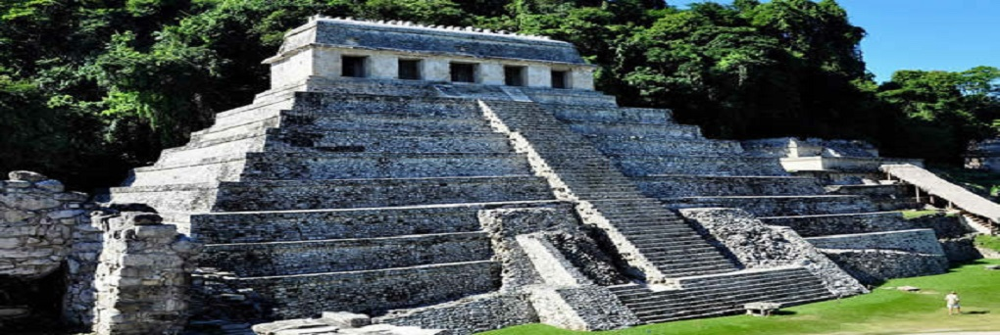
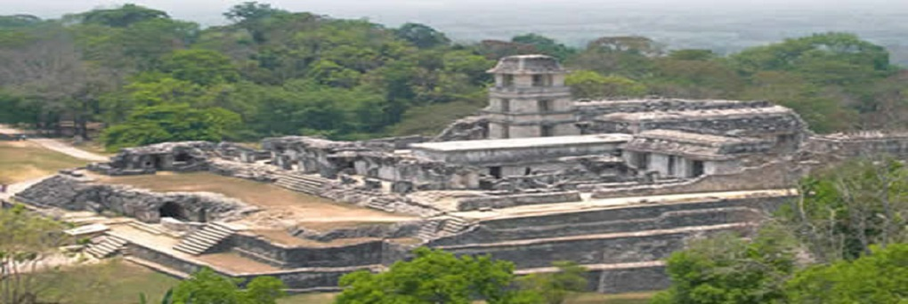
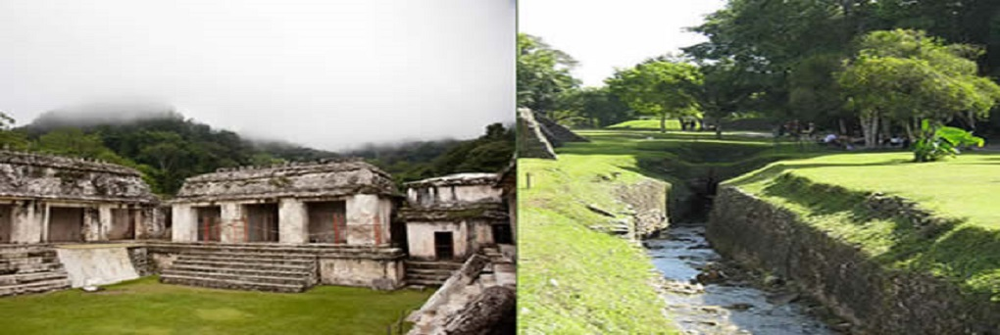
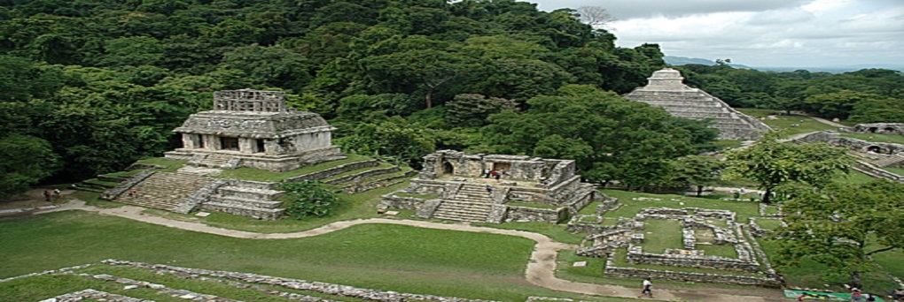
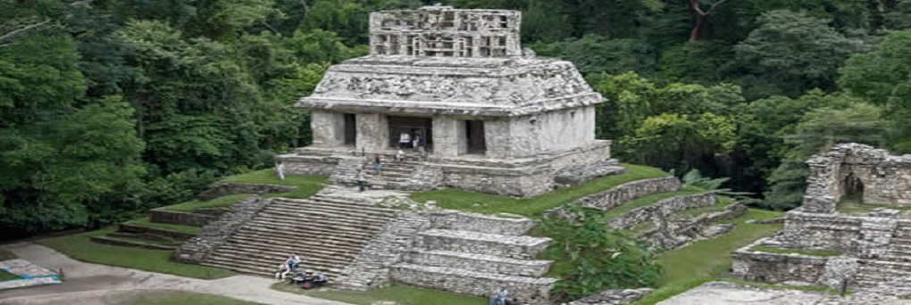
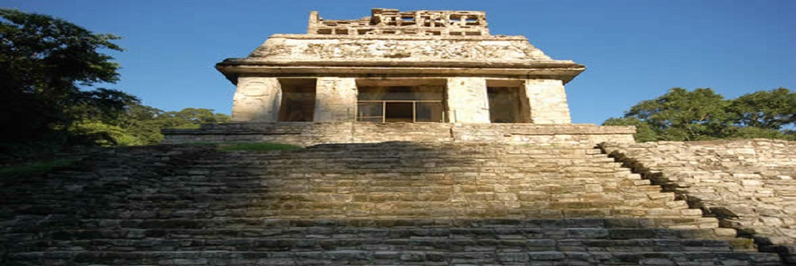
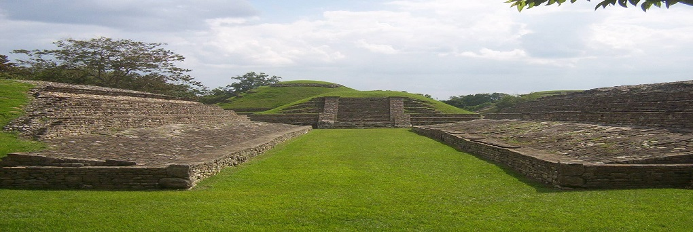

Se trata de un templo sobre una pirámide escalonada localizada en el costado oriental. Tiene este nombre por tres tableros de roca con inscripciones jeroglíficas, que se encuentran dentro del templo. Los jeroglíficos detallan la historia de la dinastía regente en la ciudad, y los hechos de Pacal el Grande. La estructura está decorada con relieves hechos en estuco. En el interior del templo, una baldosa cubría la escalinata que descendía dentro de la pirámide, que en dos tramos, llegaba a la cripta funeraria de Pacal. Tanto el sarcófago y la losa que lo cubre, como los muros de la cripta, están decorados con bajorrelieves que muestran, entre otras cosas, la muerte de Pacal y su descenso al inframundo, donde toma la identidad de uno de los dos gemelos que, en el Popol Vuh, derrotaron a los señores del inframundo y alcanzaron la inmortalidad. En los jeroglíficos de la cripta, se describen también el origen y los ancestros de Pacal, así como la banda celeste y una serie de deidades mayas.
Más que un edificio, se trata de un complejo de edificios interconectados, que fueron construidos, remodelados y modificados a lo largo de cuatrocientos años, sobre una terraza artificial. Está situado en la parte central de la zona arqueológica, y su nombre se debe a la conjunción de patios, crujías y la torre de cuatro cuerpos que lo caracteriza. Contiene esculturas y bajorrelieves en estuco de alto valor artístico.
Se trata de una estructura abovedada de tres metros de altura, conduce al río Otulum por debajo de la plaza principal de Palenque, en la sección que corresponde a la fachada oriental del Palacio. El acueducto se complementa con un puente de piedra construido aguas abajo, en el lugar conocido como Baño de la Reina, al extremo norte del grupo principal.
Formado por el Templo de la cruz, el Templo del sol, y el Templo de la cruz foliada. Se trata de un conjunto de templos sobre pirámides escalonadas, cada uno con elaborados relieves en su interior. Los templos conmemoran el ascenso al trono del Señor Chan Bahlum II, tras la muerte de Pacal el Grande, y muestran al nuevo Señor recibiendo la grandeza de manos de su predecesor. Las cruces a las que aluden los nombres de los templos, son en realidad representaciones del árbol de la creación que se encuentra en el centro del mundo, de acuerdo a la mitología maya. El Templo de la Cruz aún conserva la crestería, un muro calado que coronaba la estructura. En su interior estaba el tablero central (hoy exhibido en el Museo Nacional de Antropología) que tiene una representación del monstruo de la tierra, del cual brota una planta de maíz. Sobre la planta, flanqueada por dos figuras humanas, se encuentra posada un ave fantástica. El Templo de la cruz foliada ha perdido su fachada, y sólo la segunda crujía se conserva completa.
Se encuentra 200 m al sur del grupo principal. Debe su nombre al elaborado bajorrelieve, hoy destruido, que representaba a un rey sentado sobre un trono en forma de un jaguar bicéfalo.
Fue llamado así por Waldeck, quien lo habitó durante su estancia en Palenque, y, entre otras extravagancias, se acreditaba a sí mismo el título de Conde (otra veces asumía los títulos de Barón y Duque). El elegante edificio tiene un basamento escalonado de cinco cuerpos. En la parte superior está un templo que conserva la totalidad de sus elementos arquitectónicos originales.
Dos plataformas paralelas formaron la estructura para el juego de pelota. Sin embargo, aún se requieren trabajos de exploración y consolidación.